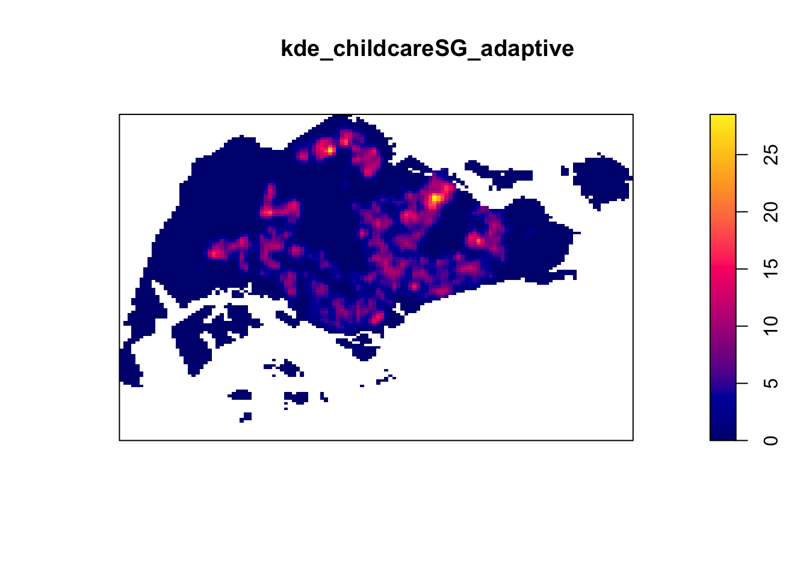
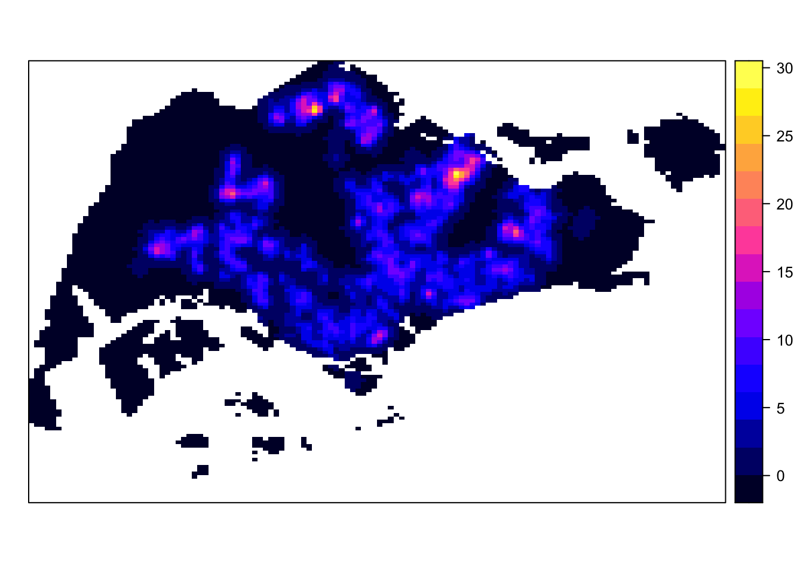

install.packages("maptools",repos= "https://packagemanager.posit.co/cran/2023-10-13")In-class Exercise 2
Issue 1: Installing maptools (For sp method)
For R shiny, Posit Public Package manager
Issue 2: creating coastal outline
sp - store spatial data (import and export)
sf - programmatic gis software
st_combine()- map no boundaries (with control)
st_union()- no control
Need this code to run %>%
pacman::p_load(sf, raster, spatstat, tmap, tidyverse)mpsz_sf <- st_read(dsn = "data",
layer = "MP14_SUBZONE_WEB_PL")Reading layer `MP14_SUBZONE_WEB_PL' from data source
`/Users/seesarhlakyi/Desktop/ssrhk/ISSS626-GAA/In-class_Ex/In-class_Ex02/data'
using driver `ESRI Shapefile'
Simple feature collection with 323 features and 15 fields
Geometry type: MULTIPOLYGON
Dimension: XY
Bounding box: xmin: 2667.538 ymin: 15748.72 xmax: 56396.44 ymax: 50256.33
Projected CRS: SVY21sg_sf <- mpsz_sf %>%
st_union()
plot(sg_sf)
Issue 3: spatstat.geom
ppp - use this if input data is sp object (Don’t use sp)
as.ppp - use this if input data is sf object, allow to create point object
as.owin - use this if input data is polygon, give boundary (ALL SPATIAL DATA NEED THIS)
Kernel Density Estimation
Assuming that maptools is installed
childcare_sf <- st_read("data/child-care-services-geojson.geojson") %>%
st_transform(crs = 3414)Reading layer `child-care-services-geojson' from data source
`/Users/seesarhlakyi/Desktop/ssrhk/ISSS626-GAA/In-class_Ex/In-class_Ex02/data/child-care-services-geojson.geojson'
using driver `GeoJSON'
Simple feature collection with 1545 features and 2 fields
Geometry type: POINT
Dimension: XYZ
Bounding box: xmin: 103.6824 ymin: 1.248403 xmax: 103.9897 ymax: 1.462134
z_range: zmin: 0 zmax: 0
Geodetic CRS: WGS 84sg_sf <- st_read(dsn = "data", layer="CostalOutline")Reading layer `CostalOutline' from data source
`/Users/seesarhlakyi/Desktop/ssrhk/ISSS626-GAA/In-class_Ex/In-class_Ex02/data'
using driver `ESRI Shapefile'
Simple feature collection with 60 features and 4 fields
Geometry type: POLYGON
Dimension: XY
Bounding box: xmin: 2663.926 ymin: 16357.98 xmax: 56047.79 ymax: 50244.03
Projected CRS: SVY21childcare_ppp <- as.ppp(childcare_sf)Warning in as.ppp.sf(childcare_sf): only first attribute column is used for
markschildcare_pppMarked planar point pattern: 1545 points
marks are of storage type 'character'
window: rectangle = [11203.01, 45404.24] x [25667.6, 49300.88] unitssg_owin <- as.owin(sg_sf)
childcareSG_ppp = childcare_ppp[sg_owin]
childcareSG_ppp.km <- rescale.ppp(childcareSG_ppp, 1000, "km")
bw <- bw.diggle(childcareSG_ppp)kde_childcareSG_adaptive <- density(childcareSG_ppp.km, sigma=bw.diggle, edge=TRUE, kernel="gaussian")
plot(kde_childcareSG_adaptive)
A way to do this without maptools
gridded_kde_childcareSG_ad <- as(kde_childcareSG_adaptive,"SpatialGridDataFrame")
spplot(gridded_kde_childcareSG_ad)
Monte Carlo Simulation
At the very beginning start with set.seed(1234)
Edge Correction
Avoid biasness if data point occur at the edge of study area
none: don’t do edge correction ( if it’s not necessary, don’t do it)
Different configuration do different things
Importing Thai Road Accident Data
Data-preparation
rdacc_sf <- read_csv("data/thai_road_accident_2019_2022.csv") %>%
filter (!is.na(longitude) & longitude != "",
!is.na(latitude ) & latitude != "") %>%
st_as_sf(coords = c(
"longitude", "latitude"),
crs=4326) %>%
st_transform(crs=32647)Rows: 81735 Columns: 18
── Column specification ────────────────────────────────────────────────────────
Delimiter: ","
chr (10): province_th, province_en, agency, route, vehicle_type, presumed_c...
dbl (6): acc_code, number_of_vehicles_involved, number_of_fatalities, numb...
dttm (2): incident_datetime, report_datetime
ℹ Use `spec()` to retrieve the full column specification for this data.
ℹ Specify the column types or set `show_col_types = FALSE` to quiet this message.Cannot lose more than 25% cannot lose (for big datasets)